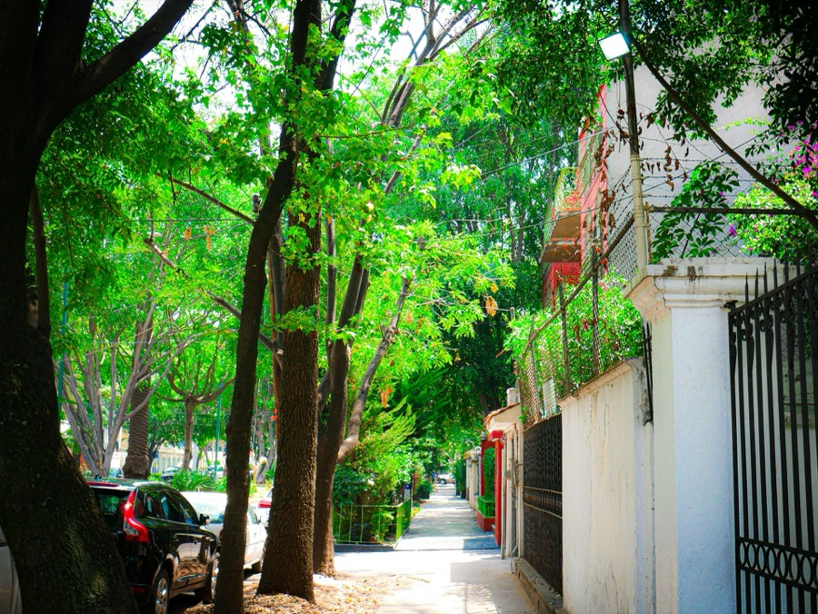

PolancoMiguel Hidalgo · 3 suites
El centro corporativo y cultural de la ciudad. Presidente Masaryk concentra oficinas, banca privada, galerías y la mayor densidad de restaurantes de alta cocina de México.
Nuestras suites en Emilio Castelar 9 y Homero 829 están a distancia caminable del Parque Lincoln, el Auditorio Nacional y el Bosque de Chapultepec.
- Presidente Masaryk · 5 min
- Auditorio Nacional · 10 min
- Aeropuerto (AICM) · 30 min
- Santa Fe · 25 min